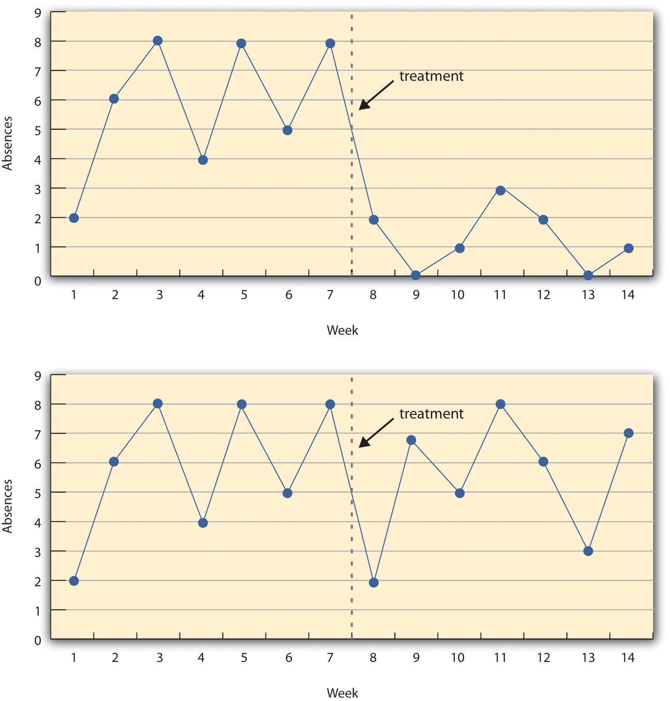

The prefix quasi means “resembling.” Thus quasi-experimental research is research that resembles experimental research but is not true experimental research. Although the independent variable is manipulated, participants are not randomly assigned to conditions or orders of conditions (Cook & Campbell, 1979).Cook, T. D., & Campbell, D. T. (1979). Quasi-experimentation: Design & analysis issues in field settings. Boston, MA: Houghton Mifflin. Because the independent variable is manipulated before the dependent variable is measured, quasi-experimental research eliminates the directionality problem. But because participants are not randomly assigned—making it likely that there are other differences between conditions—quasi-experimental research does not eliminate the problem of confounding variables. In terms of internal validity, therefore, quasi-experiments are generally somewhere between correlational studies and true experiments.
Quasi-experiments are most likely to be conducted in field settings in which random assignment is difficult or impossible. They are often conducted to evaluate the effectiveness of a treatment—perhaps a type of psychotherapy or an educational intervention. There are many different kinds of quasi-experiments, but we will discuss just a few of the most common ones here.
Recall that when participants in a between-subjects experiment are randomly assigned to conditions, the resulting groups are likely to be quite similar. In fact, researchers consider them to be equivalent. When participants are not randomly assigned to conditions, however, the resulting groups are likely to be dissimilar in some ways. For this reason, researchers consider them to be nonequivalent. A nonequivalent groups designA between-subjects research design in which participants are not randomly assigned to conditions, usually because participants are in preexisting groups (e.g., students at different schools)., then, is a between-subjects design in which participants have not been randomly assigned to conditions.
Imagine, for example, a researcher who wants to evaluate a new method of teaching fractions to third graders. One way would be to conduct a study with a treatment group consisting of one class of third-grade students and a control group consisting of another class of third-grade students. This would be a nonequivalent groups design because the students are not randomly assigned to classes by the researcher, which means there could be important differences between them. For example, the parents of higher achieving or more motivated students might have been more likely to request that their children be assigned to Ms. Williams’s class. Or the principal might have assigned the “troublemakers” to Mr. Jones’s class because he is a stronger disciplinarian. Of course, the teachers’ styles, and even the classroom environments, might be very different and might cause different levels of achievement or motivation among the students. If at the end of the study there was a difference in the two classes’ knowledge of fractions, it might have been caused by the difference between the teaching methods—but it might have been caused by any of these confounding variables.
Of course, researchers using a nonequivalent groups design can take steps to ensure that their groups are as similar as possible. In the present example, the researcher could try to select two classes at the same school, where the students in the two classes have similar scores on a standardized math test and the teachers are the same sex, are close in age, and have similar teaching styles. Taking such steps would increase the internal validity of the study because it would eliminate some of the most important confounding variables. But without true random assignment of the students to conditions, there remains the possibility of other important confounding variables that the researcher was not able to control.
In a pretest-posttest designA research design in which the dependent variable is measured (the pretest), a treatment is given, and the dependent variable is measured again (the posttest) to see if there is a change in the dependent variable from pretest to posttest., the dependent variable is measured once before the treatment is implemented and once after it is implemented. Imagine, for example, a researcher who is interested in the effectiveness of an antidrug education program on elementary school students’ attitudes toward illegal drugs. The researcher could measure the attitudes of students at a particular elementary school during one week, implement the antidrug program during the next week, and finally, measure their attitudes again the following week. The pretest-posttest design is much like a within-subjects experiment in which each participant is tested first under the control condition and then under the treatment condition. It is unlike a within-subjects experiment, however, in that the order of conditions is not counterbalanced because it typically is not possible for a participant to be tested in the treatment condition first and then in an “untreated” control condition.
If the average posttest score is better than the average pretest score, then it makes sense to conclude that the treatment might be responsible for the improvement. Unfortunately, one often cannot conclude this with a high degree of certainty because there may be other explanations for why the posttest scores are better. One category of alternative explanations goes under the name of historyRefers collectively to extraneous events that can occur between a pretest and posttest or between the first and last measurements in a time series. It can provide alternative explanations for an observed change in the dependent variable.. Other things might have happened between the pretest and the posttest. Perhaps an antidrug program aired on television and many of the students watched it, or perhaps a celebrity died of a drug overdose and many of the students heard about it. Another category of alternative explanations goes under the name of maturationRefers collectively to extraneous developmental changes in participants that can occur between a pretest and posttest or between the first and last measurements in a time series. It can provide an alternative explanation for an observed change in the dependent variable.. Participants might have changed between the pretest and the posttest in ways that they were going to anyway because they are growing and learning. If it were a yearlong program, participants might become less impulsive or better reasoners and this might be responsible for the change.
Another alternative explanation for a change in the dependent variable in a pretest-posttest design is regression to the meanThe statistical fact that an individual who scores extremely on one occasion will tend to score less extremely on the next occasion.. This refers to the statistical fact that an individual who scores extremely on a variable on one occasion will tend to score less extremely on the next occasion. For example, a bowler with a long-term average of 150 who suddenly bowls a 220 will almost certainly score lower in the next game. Her score will “regress” toward her mean score of 150. Regression to the mean can be a problem when participants are selected for further study because of their extreme scores. Imagine, for example, that only students who scored especially low on a test of fractions are given a special training program and then retested. Regression to the mean all but guarantees that their scores will be higher even if the training program has no effect. A closely related concept—and an extremely important one in psychological research—is spontaneous remissionImprovement in a psychological or medical problem over time without any treatment.. This is the tendency for many medical and psychological problems to improve over time without any form of treatment. The common cold is a good example. If one were to measure symptom severity in 100 common cold sufferers today, give them a bowl of chicken soup every day, and then measure their symptom severity again in a week, they would probably be much improved. This does not mean that the chicken soup was responsible for the improvement, however, because they would have been much improved without any treatment at all. The same is true of many psychological problems. A group of severely depressed people today is likely to be less depressed on average in 6 months. In reviewing the results of several studies of treatments for depression, researchers Michael Posternak and Ivan Miller found that participants in waitlist control conditions improved an average of 10 to 15% before they received any treatment at all (Posternak & Miller, 2001).Posternak, M. A., & Miller, I. (2001). Untreated short-term course of major depression: A meta-analysis of studies using outcomes from studies using wait-list control groups. Journal of Affective Disorders, 66, 139–146. Thus one must generally be very cautious about inferring causality from pretest-posttest designs.
Early studies on the effectiveness of psychotherapy tended to use pretest-posttest designs. In a classic 1952 article, researcher Hans Eysenck summarized the results of 24 such studies showing that about two thirds of patients improved between the pretest and the posttest (Eysenck, 1952).Eysenck, H. J. (1952). The effects of psychotherapy: An evaluation. Journal of Consulting Psychology, 16, 319–324. But Eysenck also compared these results with archival data from state hospital and insurance company records showing that similar patients recovered at about the same rate without receiving psychotherapy. This suggested to Eysenck that the improvement that patients showed in the pretest-posttest studies might be no more than spontaneous remission. Note that Eysenck did not conclude that psychotherapy was ineffective. He merely concluded that there was no evidence that it was, and he wrote of “the necessity of properly planned and executed experimental studies into this important field” (p. 323). You can read the entire article here:
http://psychclassics.yorku.ca/Eysenck/psychotherapy.htm
Fortunately, many other researchers took up Eysenck’s challenge, and by 1980 hundreds of experiments had been conducted in which participants were randomly assigned to treatment and control conditions, and the results were summarized in a classic book by Mary Lee Smith, Gene Glass, and Thomas Miller (Smith, Glass, & Miller, 1980).Smith, M. L., Glass, G. V., & Miller, T. I. (1980). The benefits of psychotherapy. Baltimore, MD: Johns Hopkins University Press. They found that overall psychotherapy was quite effective, with about 80% of treatment participants improving more than the average control participant. Subsequent research has focused more on the conditions under which different types of psychotherapy are more or less effective.
A variant of the pretest-posttest design is the interrupted time-series designA research design in which a series of measurements of the dependent variable are taken both before and after a treatment.. A time series is a set of measurements taken at intervals over a period of time. For example, a manufacturing company might measure its workers’ productivity each week for a year. In an interrupted time series-design, a time series like this is “interrupted” by a treatment. In one classic example, the treatment was the reduction of the work shifts in a factory from 10 hours to 8 hours (Cook & Campbell, 1979).Cook, T. D., & Campbell, D. T. (1979). Quasi-experimentation: Design & analysis issues in field settings. Boston, MA: Houghton Mifflin. Because productivity increased rather quickly after the shortening of the work shifts, and because it remained elevated for many months afterward, the researcher concluded that the shortening of the shifts caused the increase in productivity. Notice that the interrupted time-series design is like a pretest-posttest design in that it includes measurements of the dependent variable both before and after the treatment. It is unlike the pretest-posttest design, however, in that it includes multiple pretest and posttest measurements.
Figure 7.5 "A Hypothetical Interrupted Time-Series Design" shows data from a hypothetical interrupted time-series study. The dependent variable is the number of student absences per week in a research methods course. The treatment is that the instructor begins publicly taking attendance each day so that students know that the instructor is aware of who is present and who is absent. The top panel of Figure 7.5 "A Hypothetical Interrupted Time-Series Design" shows how the data might look if this treatment worked. There is a consistently high number of absences before the treatment, and there is an immediate and sustained drop in absences after the treatment. The bottom panel of Figure 7.5 "A Hypothetical Interrupted Time-Series Design" shows how the data might look if this treatment did not work. On average, the number of absences after the treatment is about the same as the number before. This figure also illustrates an advantage of the interrupted time-series design over a simpler pretest-posttest design. If there had been only one measurement of absences before the treatment at Week 7 and one afterward at Week 8, then it would have looked as though the treatment were responsible for the reduction. The multiple measurements both before and after the treatment suggest that the reduction between Weeks 7 and 8 is nothing more than normal week-to-week variation.
Figure 7.5 A Hypothetical Interrupted Time-Series Design
The top panel shows data that suggest that the treatment caused a reduction in absences. The bottom panel shows data that suggest that it did not.
A type of quasi-experimental design that is generally better than either the nonequivalent groups design or the pretest-posttest design is one that combines elements of both. There is a treatment group that is given a pretest, receives a treatment, and then is given a posttest. But at the same time there is a control group that is given a pretest, does not receive the treatment, and then is given a posttest. The question, then, is not simply whether participants who receive the treatment improve but whether they improve more than participants who do not receive the treatment.
Imagine, for example, that students in one school are given a pretest on their attitudes toward drugs, then are exposed to an antidrug program, and finally are given a posttest. Students in a similar school are given the pretest, not exposed to an antidrug program, and finally are given a posttest. Again, if students in the treatment condition become more negative toward drugs, this could be an effect of the treatment, but it could also be a matter of history or maturation. If it really is an effect of the treatment, then students in the treatment condition should become more negative than students in the control condition. But if it is a matter of history (e.g., news of a celebrity drug overdose) or maturation (e.g., improved reasoning), then students in the two conditions would be likely to show similar amounts of change. This type of design does not completely eliminate the possibility of confounding variables, however. Something could occur at one of the schools but not the other (e.g., a student drug overdose), so students at the first school would be affected by it while students at the other school would not.
Finally, if participants in this kind of design are randomly assigned to conditions, it becomes a true experiment rather than a quasi experiment. In fact, it is the kind of experiment that Eysenck called for—and that has now been conducted many times—to demonstrate the effectiveness of psychotherapy.
Discussion: Imagine that a group of obese children is recruited for a study in which their weight is measured, then they participate for 3 months in a program that encourages them to be more active, and finally their weight is measured again. Explain how each of the following might affect the results: